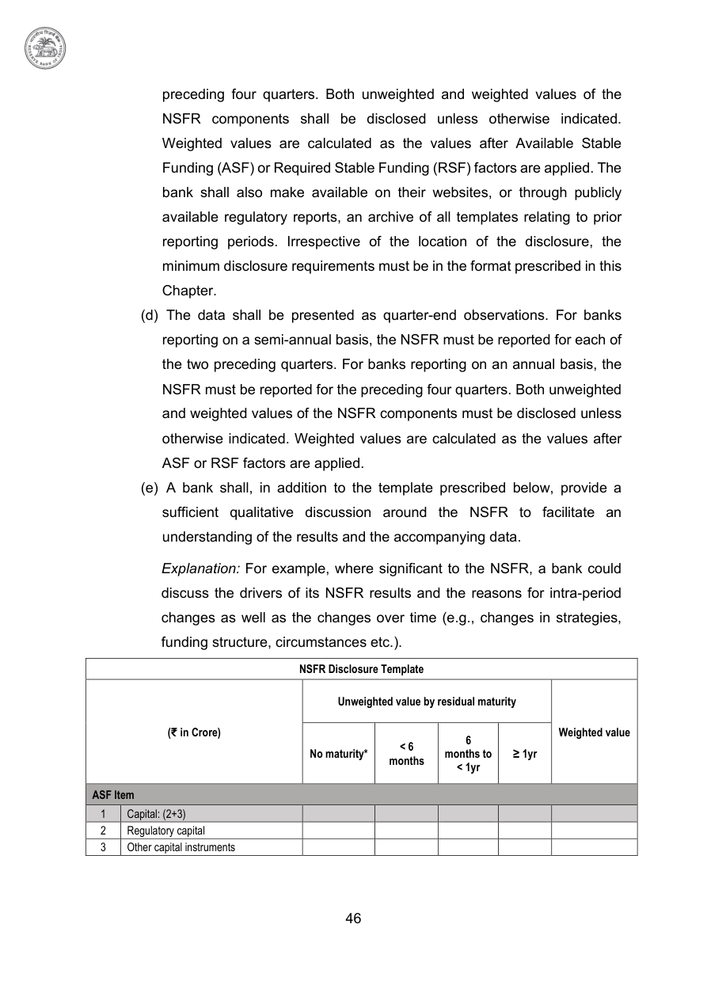

46
preceding four quarters. Both unweighted and weighted values of the
NSFR components shall be disclosed unless otherwise indicated.
Weighted values are calculated as the values after Available Stable
Funding (ASF) or Required Stable Funding (RSF) factors are applied. The
bank shall also make available on their websites, or through publicly
available regulatory reports, an archive of all templates relating to prior
reporting periods. Irrespective of the location of the disclosure, the
minimum disclosure requirements must be in the format prescribed in this
Chapter.
(d) The data shall be presented as quarter-end observations. For banks
reporting on a semi-annual basis, the NSFR must be reported for each of
the two preceding quarters. For banks reporting on an annual basis, the
NSFR must be reported for the preceding four quarters. Both unweighted
and weighted values of the NSFR components must be disclosed unless
otherwise indicated. Weighted values are calculated as the values after
ASF or RSF factors are applied.
(e) A bank shall, in addition to the template prescribed below, provide a
sufficient qualitative discussion around the NSFR to facilitate an
understanding of the results and the accompanying data.
Explanation: For example, where significant to the NSFR, a bank could
discuss the drivers of its NSFR results and the reasons for intra-period
changes as well as the changes over time (e.g., changes in strategies,
funding structure, circumstances etc.).
NSFR Disclosure Template
(₹ in Crore)
Unweighted value by residual maturity
Weighted value
No maturity*
< 6
months
< 6
months
6
months to
months to
< 1yr
≥ 1yr
ASF Item
1
Capital: (2+3)
2
Regulatory capital
3
Other capital instruments
Capital: (2+3)
2
Regulatory capital
3
Other capital instruments